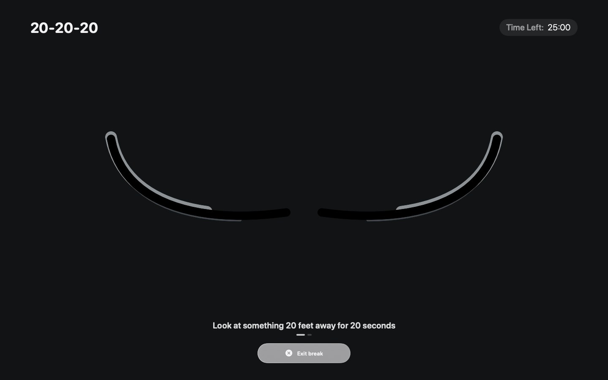
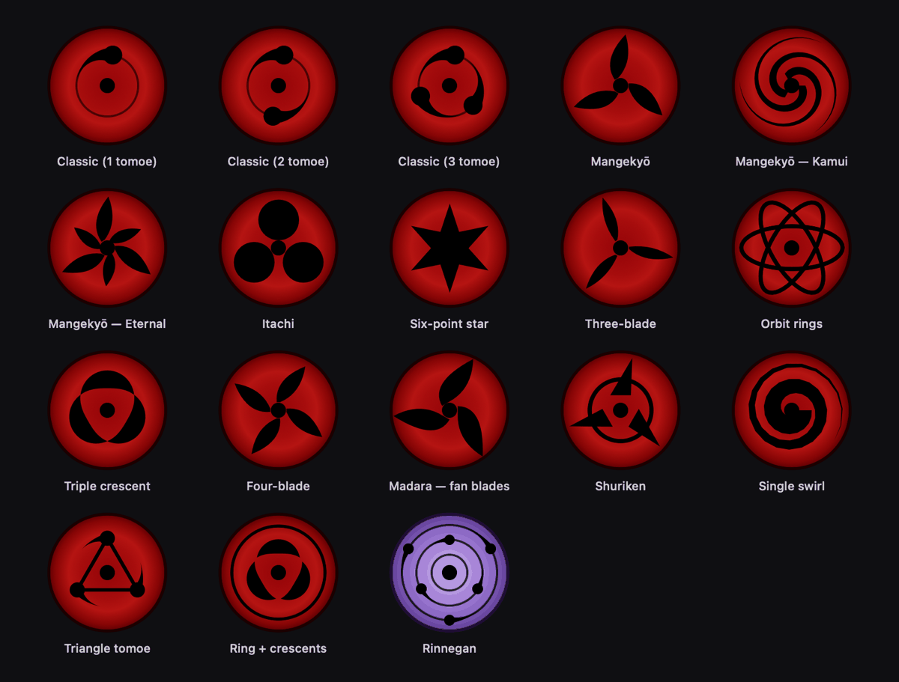

For macOS — free & open source
Your eyes deserve
a guardian.
Sharingan is a menu-bar Pomodoro & eye-health companion — enforced screen breaks, camera-verified eye exercises, tasks, streaks, and a desktop that watches back.
- 18 eye styles
- 6 themes
- 100% on-device
- 0 accounts, ads, trackers
Break enforcement
Breaks that actually happen
When it's time to rest, Sharingan takes the whole screen — on every monitor. ⌘Q, ⌘W and app switching stay blocked, a guided exercise runs, and the screen dims while rain or lo-fi plays. Work can wait 20 seconds.

Features
Everything a tired pair of eyes needs
-
Pomodoro, your rules
Countdown or count-up, custom focus and break lengths, long breaks every N rounds, auto-start and repeat.
-
Camera-verified exercises
20-20-20, 8-direction gaze and blink drills — validated live on-device with Vision face landmarks.
-
Private by design
Blink and gaze detection run entirely on your Mac, with a pulsing indicator whenever the camera is on.
-
Floating timer
An always-on-top glass chip that joins every Space. Drag it anywhere; it steps aside during breaks.
-
Tasks & focus queue
Priorities P1–P4, tags, projects, subtasks, recurrence. Queue tasks — each pomodoro advances to the next.
-
Natural-language input
“tomorrow 15:00 p1 #work report”, “5pm”, “+15m” — English and Uzbek shorthand, parsed live.
-
Streaks & milestones
Daily streaks with badges at 1, 7, 14, 30, 90 and 365 days, plus 7/30-day focus charts.
-
Break comfort
Rain, forest, white-noise or lo-fi ambience, smooth screen dimming, posture and water reminders.
-
App blocking
Hide or force-quit Chrome, Slack, Telegram and friends the moment a break starts.
-
iCloud sync
Settings and streaks follow you to every Mac through your private CloudKit database.
-
Eisenhower matrix
See urgent vs. important at a glance, snooze the rest, and keep a desktop Today panel with your tasks.
-
Six themes
Liquid Glass, Frosted, Midnight, Cream, Neon and Mono — the whole app, not just an accent color.
Live wallpaper
A desktop that watches back
Sharingan ships a live wallpaper: two eyes on your desktop that follow your cursor, blink, wink when you're idle, doze off when you're away — and wake with the next pattern in the evolution chain. This page's background is that same engine, rebuilt in WebGL.

Automation
Terminal-grade control
The tired CLI and a sharingan:// URL scheme
drive the timer from Terminal, Shortcuts or Raycast.
FAQ
Questions, answered
Is Sharingan free?
Yes. Sharingan is free and open source. There is no account, no subscription and no tracking.
Does camera data leave my Mac?
Never. Blink and gaze detection run entirely on-device with Apple's Vision framework. The camera is optional, and a pulsing badge is always shown while it is on.
Which Macs does it support?
macOS 14 (Sonoma) or later, on Apple Silicon.
Can I skip a break?
Yes — every break screen has a skip button. Want stricter rest? Enable app blocking so distracting apps hide or quit when a break starts.
How do I install it?
Download Sharingan.dmg, open it and drag Sharingan to Applications. On first launch, right-click the app and choose Open — this build is not notarized.
Does it sync between Macs?
Yes — settings and streaks sync through your private iCloud (CloudKit) database. Nothing touches third-party servers.
Rest your eyes.
Keep your streak.
Free download. No account, no tracking — camera frames never leave your Mac.